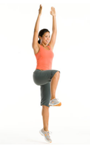

Move 4 (Intermediate: Hands-Up Hop)

Stand with feet hip-width apart, knees slightly bent, hands on hips.
Step forward with left foot and simultaneously lift right knee to hip level as you hop straight up on left leg and extend arms overhead.
Land with feet together, hands on hips.
Do 20 reps, alternating sides.